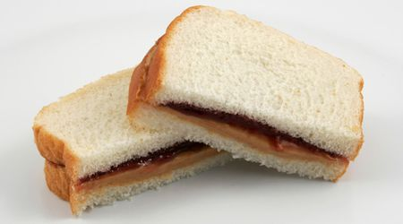

Peanut Butter and Jelly Sandwich

Description
An easy and quick sandwich classic. Mixing two great main ingredients.
Ingredients
- Peanut Butter
- Grape Jelly
- Bread
Steps
- Take ingredients and lay out.
- Spread peanut butter with knife on one piece of bread.
- Spread grape jelly with knife on opposite piece of bread.
- Stick the two slices together with peanut butter and jelly sides.
- Serve for one!